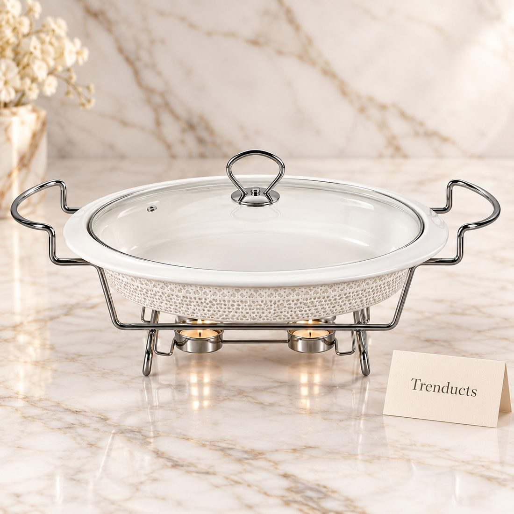
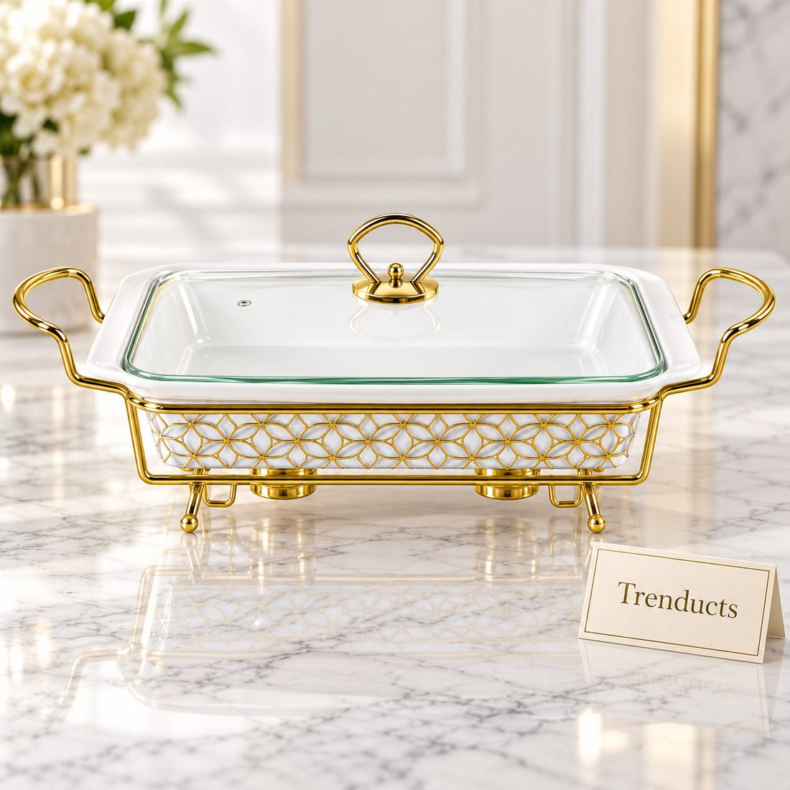
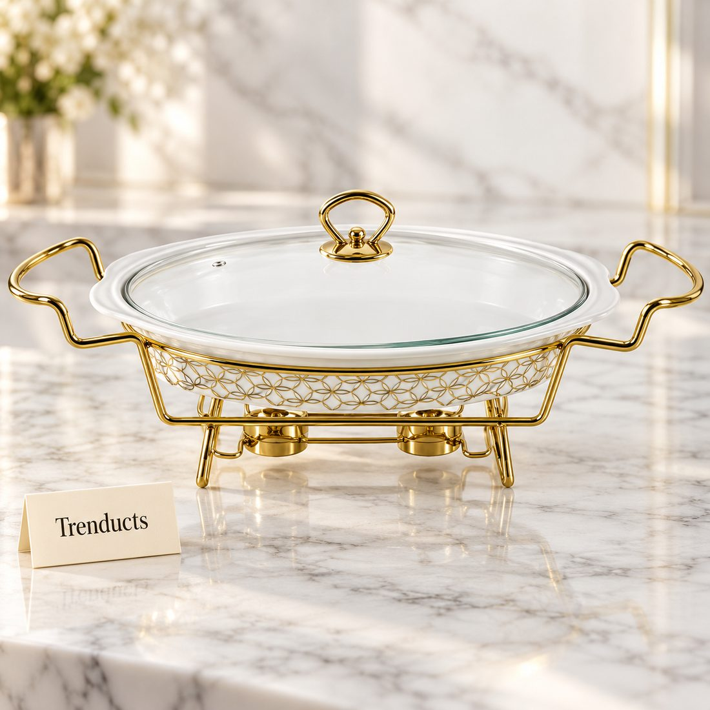

Ramadan in Pakistan is a month of devotion, but it is also a month of gathering. Families invite relatives for iftar, friends organise iftar get-togethers, and offices host colleagues. The moment the Maghrib azan sounds, everyone reaches for a date and water, followed by pakoras, samosas, fruit chaat and dahi baray. It is a joyful scene, but behind it the host is often racing against the clock.
A good iftar party depends on planning and on having the right serving dishes ready. This guide explains how to organise the evening so you can sit down and break your fast with your guests instead of rushing in the kitchen.
Plan a manageable menu
The classic Pakistani iftar spread includes dates, water, Rooh Afza or a sherbet, fruit chaat, pakoras, samosas, dahi baray and chana chaat. A larger party may follow with a main meal of biryani, karahi or haleem after Maghrib prayer. Choose a menu you can manage while fasting. Prepare as much as possible in advance: chaat can be cut and chilled, dahi baray soaked earlier in the day, and samosas filled and frozen days before.

Set up the table early
Lay the table an hour before iftar. Place dates, glasses and water jugs first, as these are needed the moment the azan begins. Arrange serving dishes and platters in their positions, empty, so you know exactly where everything goes. When the fried items come out of the kitchen, they go straight into place. This avoids last-minute confusion.
Choosing serving dishes
The right dishes keep food warm, look generous and make serving easier:
- Casseroles with stands and warmers keep biryani, haleem and karahi hot through the evening
- Oval and rectangular dishes suit pakoras and samosas laid in rows
- Deep bowls hold chaat and dahi baray without spills
- A large tray with small bowls works well for dates and condiments
- A candle stand dish adds a festive glow in the centre
If you host often during Ramadan, a few good pieces from a tableware and serving collection will be used many times through the month and again at Eid.
Keep fried food crisp
Pakoras and samosas lose their crunch if they sit in a closed dish. Fry them as close to iftar as possible and place them on paper towels before moving to an open platter. If frying in batches, keep earlier batches in a low oven. Serve chutneys in separate small bowls rather than pouring them over.

Think about seating
In many Pakistani homes, iftar is served on the dining table and also on a dastarkhwan on the floor for larger groups. Elders should have comfortable chairs. Arrange seating so guests can reach dates and water easily. Make space for prayer after iftar: a clean room with prayer mats laid out and the qibla direction clear.
Hydration and lighter choices
After a long fast, guests need water and light food first. Offer plain water and a non-sugary option alongside sherbets. Include fruit and yoghurt-based dishes, and do not overload the menu with fried food. Diabetic guests appreciate sugar-free options; quietly check with elders beforehand.
Clean as you go
The biggest stress after an iftar party is the mountain of dishes. Soak pans and fryers in hot soapy water as soon as cooking ends. Ask a family member to clear plates after the first round. Use a few serving dishes that can go from the oven to the table to save washing. Keep a large bin with a liner in the kitchen.

Plan for children and late arrivals
Children get hungry and restless before iftar, especially non-fasting younger ones. Keep a small plate of snacks for them in another room. Traffic in Pakistani cities is worst just before Maghrib, so some guests will arrive late. Keep a covered plate of dates and a jug of water near the door for them, and set aside a portion of each dish so latecomers are not left with empty platters.
Final thoughts
An iftar party is a chance to share blessings, food and company. Plan a manageable menu, set the table early, use serving dishes that keep food warm and look generous, and clean as you go. Most importantly, leave yourself a few minutes to sit, break your fast and enjoy the evening with your guests.